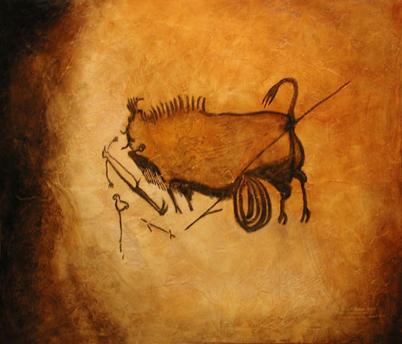

Prehistoric Paintings
Reproduced by Thomas Baker
Thomas Baker Paintings Home Page

Reproduction of a Lascaux Cave painting
(approx. 20,000 years old) by Thomas Baker
oil on plaster-textured wood panel
36 X 40 inches
This painting is available for purchase - Contact Thomas Baker
Prints of this painting are available--click here for prices and ordering info
The original of this painting has the distinction of being the earliest known representation a human being in color, discovered deep in a subterranean chamber of the cave of Lascaux in southern France. The scene shows the dramatic ending of a bison hunt in which a wounded bison attacks and apparently kills the hunter. The hunter's barbed spear, badly aimed, has torn open the bison's belly, causing its entrails to spill out. The dying animal has turned on the hunter, who has dropped his spearthrower (a throwing stick with a hook on the end) and lowers its head to gore him with its horns. The meaning of the bird on the stick is unknown, but some have suggested that it might represent the soul of the hunter, his clan symbol, or perhaps his totem animal.
Return to Prehistoric Paintings Reproductions
or
Thomas Baker Paintings Home Page
Original paintings Group 1 | Group 2 | Group 3 | Group 4
Portraits | Old Masters copies | Ancient civilizations reproductions | Prehistoric reproductions
About the Artist | Contact Thomas Baker